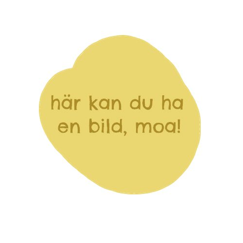
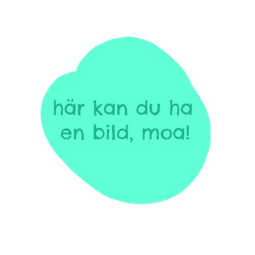
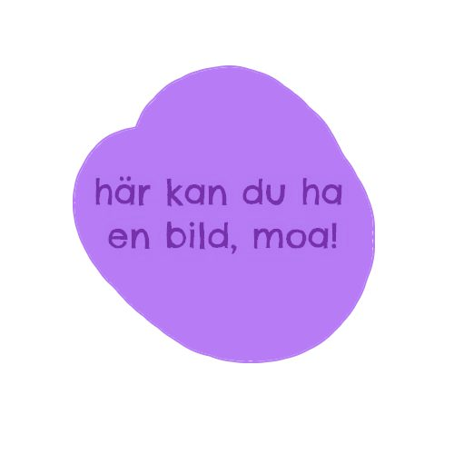
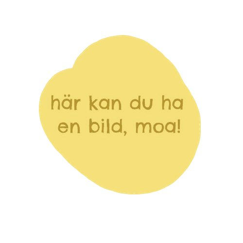

Our Shawl Collection
Each piece is unique and made to order. Contact us for availability and custom orders.
Forest Green
Organic cotton with subtle leaf pattern
1,200 SEK
Sunset Gradient
Wool-cotton blend in warm sunset colors
1,500 SEK

Trans Pride
Lightweight linen in pink, white and blue
1,400 SEK

Solidarity Shawl
Red, black, white and green cotton
1,400 SEK

Ocean Waves
Blue and teal wool with wave pattern
1,600 SEK

Autumn Leaves
Warm-toned cotton with leaf motif
1,300 SEK